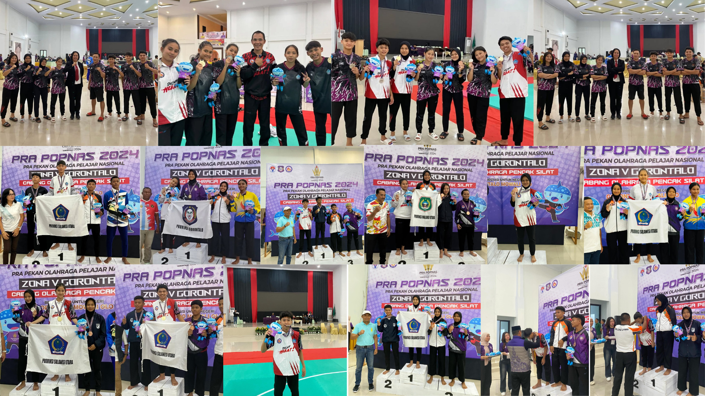

Delapan Pesilat Sulut Lolos Ke POPNAS 2025
Delapan pesilat Sulawesi Utara berhasil lolos ke Pekan Olahraga Pelajar Nasional (POPNAS) Tahun 2025 setelah...
Baca SelengkapnyaDelapan pesilat Sulawesi Utara berhasil lolos ke Pekan Olahraga Pelajar Nasional (POPNAS) Tahun 2025 setelah...
Baca SelengkapnyaSemangat membara tampak di Hall B KONI Manado...
Baca SelengkapnyaKota Manado menjadi tuan dan nyonya rumah Pekan Olahraga Provinsi (Porprov) XII Tahun 2025...
Baca Selengkapnya